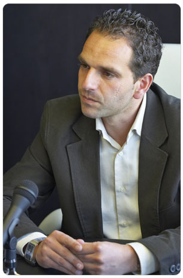

“Garantizar calidad es el mayor compromiso. Queremos que nuestro cliente viva tranquilo, sabiendo que está en las mejores manos.”
Grupo Nazasur es ya un presente consolidado en el sector de la construcción. En sólo cinco años, la empresa ha ido creciendo, asentando su estructura y diversificando su campo de actuación. Con mucho trabajo y humildad, los hermanos Fernández Cortacero han convertido una apuesta familiar en un proyecto que hoy es uno de los más interesantes y esperanzadores de la provincia de Granada. El más joven de todos ellos, Pablo, es quien dirige la nave, ahora tras la cristalera de las nuevas oficinas situadas en la carretera de Córdoba, otro sueño hecho realidad. A sus 30 años, Pablo mira de frente y contesta con tranquilidad y esmero. Sabe que está en el camino…
Nosotros somos una empresa familiar. Estábamos trabajando todos con mi padre pero yo decidí en un momento dado ponerme por mi cuenta y fundé Procecom. Nos fue bien y empezamos pronto a tener bastante volumen de trabajo. Siempre nos propusimos parámetros de calidad y eficacia y el mercado nos acogió con mucha generosidad. La verdad es que en poco tiempo adquirimos un ritmo considerable. A partir de ahí nos planteamos volver a integrar una gran empresa con mi padre y mis hermanos porque no tenía mucho sentido ir cada uno por un sitio si todos nos estamos dedicando al mismo sector. Yo tampoco podía solo, así que creo que fue una gran decisión. Recuerdo perfectamente el día en que mi padre me llamó para sentar las bases de lo que hoy es el Grupo. A partir de ahí nos pusimos manos a la obra y a crecer como empresa. Ya hace 5 años desde la fundación de Grupo Nazasur, cada uno tiene las funciones perfectamente definidas y funcionamos como un equipo. Vamos poco a poco, paso a paso.
A nuestro público queremos ofrecer calidad, siempre calidad. Calidad en todo, en el servicio y en los materiales. Calidad en el trato cuando recibimos a clientes en la exposición, calidad en las terminaciones y los acabados de nuestras promociones, calidad hasta en el más mínimo detalle. Esa es una palabra tan grande que para poder ofrecerla y llevarla a cabo hay que luchar cada día. La otra característica que queremos transmitir es la humildad de quienes entienden que el esfuerzo diario es el único camino hacia la satisfacción del cliente. Queremos escuchar a la gente, a las personas que nos solicitan cualquier servicio, queremos estar lo más cerca posible de nuestro público.
Mi padre tenía una empresa de alicatados, sanitarios y complementos y la hemos querido mantener y potenciar. Dada la máxima competencia que existe en todos los sectores, también en este, es necesario especializarse y poder ofrecer al cliente los mejores productos del mercado mundial. Se trata de innovar, de avanzar, de adelantarse a los gustos y de estar pendientes también de los avances tecnológicos. Estamos viajando por toda Europa para asimilar tendencias y así poder proponer ideas y alternativas al público. Tratamos de asesorar en diseño y distribución de los elementos. Hemos estado en múltiples ferias nacionales e internacionales para completar una formación. En Grupo Nazasur creemos que todo debe estar relacionado: el decorador, el arquitecto, el alicatador… todas las piezas que integran la construcción forma parte del mismo producto, que es la satisfacción del cliente. Es el fin último. En cuanto a la propia exposición, queremos transmitir distinción y excelencia desde que el cliente entra por la puerta. Con los detalles, el suelo, la cascada de agua, los espacios abiertos… Es una superficie diferente y elegante en la que queremos que el visitante se sienta cómodo y relajado para poder observar con atención los productos que va a elegir para su casa y para su vida. Tenemos que tener presente que esas decisiones son muy importantes para los clientes.
Estamos en Granada y el cinturón metropolitano. Hemos tenido ofertas y posibilidades para salir fuera pero por el momento estamos centrados en Granada, que es nuestra gran ilusión. Tenemos mucho trabajo por delante y numerosos proyectos en marcha. Estamos haciendo una vivienda de calidad y asequible para los bolsillos del granadino medio. Estamos tratando de proponer también un cambio en la imagen, por dentro y por fuera, con alzados agresivos y rompedores en las formas geométricas y los materiales de fachada, siempre modernos y con elementos de primeras calidades. Las terminaciones en alicatados, yesos, pintura, madera…las conducciones, insonorizaciones, también son una garantía en el interior de las viviendas. Y luego nos preocupa mucho resolver rápido los problemas, que siempre aparecen. Por más que quieres aspirar a hacerlo lo mejor posible, la perfección no existe, así que es necesario tener voluntad e infraestructura para actuar con celeridad y devolver al cliente la confianza que ha depositado en nosotros. Esa es la mejor publicidad de nosotros mismos, lo que los compradores son capaces de transmitir, la tranquilidad de que en el futuro volverán a Grupo Nazasur. Ellos volverán y hablarán bien de todo nuestro trabajo. Eso es otra gran aspiración y otro motivo para dar lo mejor de nosotros.
No nos ponemos metas. Nosotros, la familia, hablamos constantemente de hacia dónde nos dirigimos y lo que queremos ser. Queremos ir creciendo pero muy poco a poco, dando pasos cortos y sólidos. Tenemos muchos proyectos entre manos que queremos finalizarlos con buena nota y tenemos que consolidar nuestra exposición en el mercado para que sea un referente. Las promociones que tenemos en marcha están vendidas al ochenta por ciento y eso quiere decir que las cosas están funcionando. Queremos fortalecer mucho la exposición, ofrecer servicios de arquitectura y decoración, que el cliente pueda encontrar en nuestra instalaciones todo lo necesario para volver a casa sin preocupaciones.
Crisis, crisis… yo no creo que exista tanta crisis. Lo que sí es verdad es que estos últimos años han sido engañosos, no han sido lógicos ni normales en cuanto al volumen de construcción y venta que se ha producido. El ‘boom’ que ha habido estaba cantado que se iba a acabar más temprano que tarde y se ha producido un frenazo que ha generado incertidumbre y ha puesto nerviosos a inversores, bancos, constructores… en cierto modo es normal este tipo de reacciones ante la situación actual. Pero bueno, esto que ha pasado va a servir para cribar el sector y el mercado porque hay muchas empresas que no van a poder soportar este bache. Cualquiera que ha tenido un terreno o unos duros se ha metido a promover viviendas y eso no es tan fácil. El que salga de este momento difícil va a salir más reforzado.
Sí, es cierto. Un día decidí que no iba a estudiar y a la mañana siguiente ya estaba trabajando. Por fortuna, el ambiente familiar ha sido siempre muy propicio para desarrollarnos como profesionales en el sector. Así que, echando la vista atrás, ya son más de diez años adquiriendo formación y experiencias. Tenía las cosas claras y creo que eso es importante en la vida, y también tuve la suerte de tener un trabajo definido desde siempre porque mi entorno también me motivaba mucho y me permitía poder aportar mis ideas al sector de la construcción. Mi familia ha estado siempre muy unida, hemos ido todos a una y eso ha sido la semilla de la que ha nacido después el fruto. Trabajo y paciencia. Somos una empresa humilde que trabaja sin descanso para estar a la altura de la sociedad y del cliente.
(Risas) La verdad es que sí, que la gente me reconoce y me recuerda también por la cicatriz. Yo era muy pequeño, tenía un año más o menos y, según lo que me cuenta mi madre, me apoyé en una pequeña mesa de cristal que se sostenía con unas ventosas y tornillos. Al echar un poco el peso saltaron y me cayó la mesa con el cristal encima. Al principio la cicatriz era muy grande y bastante escandalosa pero ha ido empequeñeciendo a la vez que yo crecía, jeje.
Esta es la casa de todos los granadinos. Deseo lo mejor a todos los lectores. Que cada uno luche por lo que cree.
Destacados:

Pablo Cortacero - Gerente de Grupo Nazasur